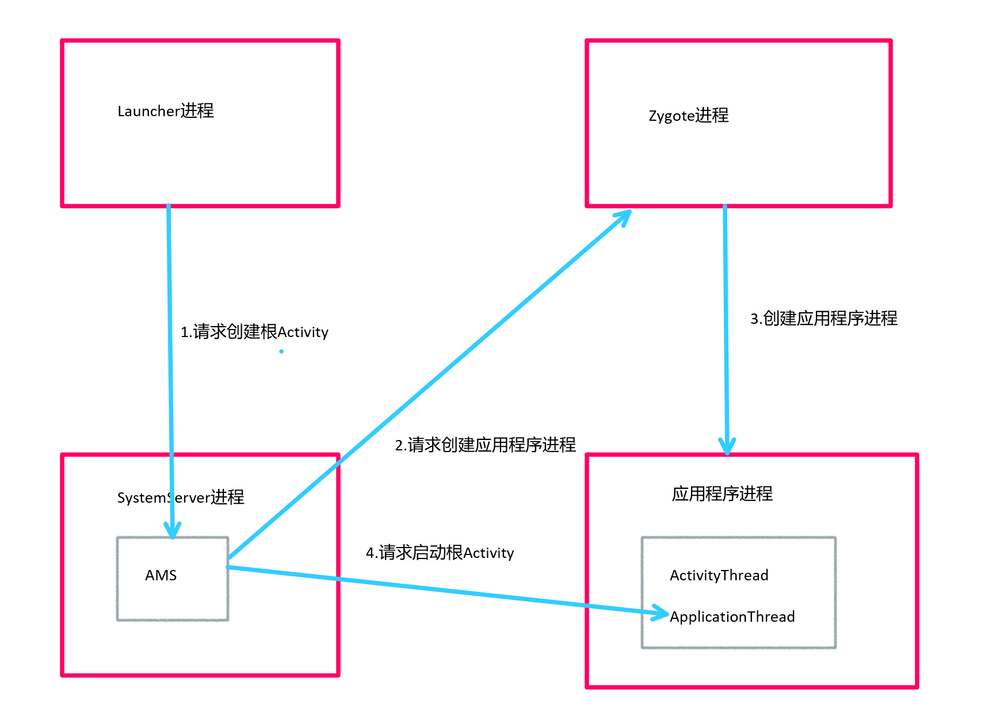
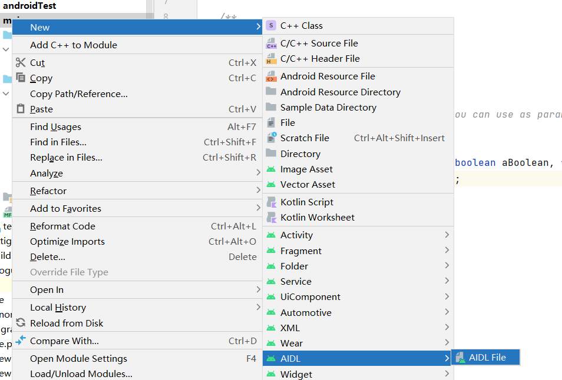

Android多个进程下同时操作同一份文件？
第一步
主进程com.howie.multiple_process之外，分别启动两个进程com.howie.multiple_process:client1、com.howie.multiple_process:client2。
x//AndroidManifest.xml 中定义两个Activity，分别在两个进程中启动<activityandroid:name=".view.ClientActivity1"android:process=":client1" /><activityandroid:name=".view.ClientActivity2"android:process=":client2" />
第二步
分别在这两个不同进程的Activity中操作同一份文件，比如ClientActivity1写入i am client1，ClientActivity2写入i am client2。
统一调用写方法
xxxxxxxxxxsuspend fun writeString( filePath: String = "${AppUtil.application.cacheDir}/process_test/test.txt", content: String) = suspendCancellableCoroutine<Boolean> { var going = true it.invokeOnCancellation { going = false } Thread { if (it.isActive) { //创建文件 val file = File(filePath) val parentFile = file.parentFile if (parentFile == null) { it.resumeWithException(IllegalAccessException("path error.")) return@Thread } if (!parentFile.exists()) { parentFile.mkdirs() } if (!file.exists()) { file.createNewFile() } while (going && it.isActive) { var filerWriter: FileWriter? = null var bufWriter: BufferedWriter? = null try { filerWriter = FileWriter(file, true) bufWriter = BufferedWriter(filerWriter) bufWriter.write(content) bufWriter.newLine() } catch (e: IOException) { e.printStackTrace() } finally { bufWriter?.close() filerWriter?.close() } } it.resumeWith(Result.success(true)) } else { it.resumeWithException(CancellationException()) } }.start()} //activity 调用 //全局异常捕获 val coroutineExceptionHandler = CoroutineExceptionHandler { _, throwable -> throwable.printStackTrace() } // 测试多进程同一文件写入，client1 写入 //一般使用lifecycleScope，这里为了测试使用GlobalScope GlobalScope.launch( context = Dispatchers.Main.immediate + coroutineExceptionHandler, start = CoroutineStart.DEFAULT ) { writeString(content = "i am client1") }如果两个写入存在影响的话，就会出现两方字符串写入交叉，比如出现如下结果i am i client1 am client2；
如果两个进程互斥的话，则应该是不会出现写入交叉的情况。
结果
xxxxxxxxxxi am client1i am client2i am client1i am client2i am client1i am client2i am client1i am client2i am client1i am client2i am client1i am client2i am client1i am client2可以看到互斥，也就是说，多个进程操作同一份文件并不会产生冲突。所以说可以考虑使用文件共享进行IPC通信。
Android IPC机制
前言
线程是CPU调度的最小单元。而进程一般指一个执行单元，在PC和移动设备上指一个程序或者一个应用。一个进程可以包含多个线程，进程和线程是包含与被包含的关系。
在很多中情况下我们需要开启多进程，最常见的比如某一个模块会占用很多的内存且比较独立，可以考虑放到单独的进程去处理。
但是多进程不仅仅是简单指定一个进程名称就好了，下面会进行详细介绍。
多进程的开启方式
在Android中开启多进程常规的话只有一种方式，给四大组件(Activity，Service，Receiver，ContentProvider)在AndroidMenifest中指定android:process属性。除此之外还有另一种非常规的方法，就是通过JNI在native层去fork一个新的进程。
常规来说都是在AndroidMenifest中指定android:process来开启多进程，可以看下面的示例。
xxxxxxxxxx<activity android:name=".view.ClientActivity1" android:process=":client1" /><activity android:name=".view.ClientActivity2" android:process="com.howie.client.client2" />当前的应用包名为com.howie.multiple_process。
所以当应用启动之后：
- 应用的默认进程即为
com.howie.multiple_process； - 当启动
ClientActivity1之后，会启动一个名为com.howie.multiple_process:client1的进程; - 当启动
ClientActivity2之后，会启动一个名为com.howie.client.client2的进程；
可以运行程序看一下效果，利用AndroidStudio的Logcat查看当前应用的进程数。

也可以利用adb shell的ps命令搜索匹配进程，比如我们输入adb shell "ps | grep com.howie"，会打印出如下信息。
xxxxxxxxxxu0_a428 9555 1042 14592908 101172 0 0 S com.howie.multiple_processu0_a428 9690 1042 14608640 95004 0 0 S com.howie.multiple_process:client1u0_a428 9728 1042 14608640 95724 0 0 S com.howie.client.client2需要注意的是，ClientActivity1和ClientActivity2的android:process属性值分别为:client1和com.howie.client.client2。
这两种命名如下两个区别：
- 进程名字不同，
:的进程名字为当前的进程名前附加上包名。如上所示，ClientActivity1的包名即为com.howie.multiple_process:client1; - 进程名以
:开头的话代表当前进程是应用程序的私有进程，其他应用的组件不可以和它跑在同一个进程；而不以:启动的进程属于全局进程，其他应用进程可以通过共享UID方式可以和它泡在同一个进程当中。两个应用通过ShareUID跑在同一个进程下需要相同的签名，此时可以互相访问对方的私有数据、还可以共享内存数据，看起来就像同一个应用的两个部分。
多进程注意点
通过指定android:process就可以开启多进程了，但是多进程还是有许多注意的地方的。不仅仅只是指定一个android:process就代表万事大吉了。
首先我们需要知道，Android应用的一个简单的启动过程。
- 桌面（Launcher进程）→AMS（SystemServer进程）→Zygote进程→由Zygote fork自身创建应用程序进程
- 创建应用程序进程，应用程序进程是通过请求
Zygote进程来创建新的应用程序进程。Zygote进程通过fock自身创建应用程序进程，这样应用程序进程就会获得Zygote进程在启动时创建的Java虚拟机实例，同时在应该程序进程创建过程中还启动了Binder线程池以及消息循环。 - 应用程序进程创建出来之后，由
AMS去请求应用程序进程去创建启动Activity。

回到我们的本片文章的主题，多进程的注意点，我们需要注意的是，在创建进程的时候同时创建了Java虚拟机。不同的虚拟机在内存分配上有不同的地址空间，导致在不同的虚拟机中访问同一个类的对象会产生多份副本。
比如我可以写如下的代码，在两个进程中同时访问使用。
xxxxxxxxxxobject DataManager{ var id = 1}我们在MainActivity中将其改变设置为2，之后再ClientActivity1中打印出该值。
我们期望再ClientActivity1中打印的值为2，但其实打印出来的是1。
这就是因为在这两个进程管理的内存地址不同，由两个虚拟机进行处理。简单理解就是DataManager再这两个进程中都存在，且这两个类互不干扰，同理这两个进程都存在自己的DataManager单例实例。所以修改当前进程的对象属性并不会影响到另一个进程。
多进程直接通过内存来共享数据，无一例外都会失败，这也是开启多进程带来的主要影响。
总的来说来说多进程主要会遇到以下几个问题。
- 静态成员和单例模式失效
- 线程同步机制失效
SharedPreferences会存在丢数据的可能Application在每次创建一个新的进程时都会重新走一次
第一点上面有讲过；第二点和第一点类似，线程同步只保证当前进程多线程同步，另一个进程的无法保证；第三点因为在内存中会有一份SharedPreferences文件的缓存，在多进程模式下，它的读/写就变得不可靠，当面对高并发的读/写访问，Sharedpreferences有很大几率会丢失数据；第四点在进程启动之后启动Activity的过程中会首先启动Application，所以启动多少个进程就会启动多少个虚拟机然后执行多少次Application。所以如果你存在多进程但是部分在Application中的逻辑只想执行此一次，可以判断进程名字，然后再想要的进程中执行。
实现跨进程的方式
实现跨进程通信的方式很多。
- 通过
Intent来传递数据。 - 共享文件。
- 基于
Binder的Messenger。 - 基于
Binder的AIDL。 Socket。- ......
平时常用的的通过Intent传递数据的方式其实就是一种跨进程的方案，需要序列化。另外还可以使用共享文件、Socket等等。当然Android中比较常用的还是Binder了，后面会就Binder进行详细的解析。
Binder
简介
简单来说，Binder是Android.os包下的一个类，它继承了IBinder接口。从IPC的角度来说Binder是Android特有的一种跨进程通信的方式。在FrameWork中，Binder是ServiceManager连接各种Manager(ActivityManager、WindowManager等等)的桥梁。
在多进程应用开发且使用Binder进行通讯，Binder则是客户端与服务端的通讯媒介。当bindService时，服务端会返回包含服务端业务调用的Binder对象，通过这个Binder对象，客户端就可以调用服务端所提供的一系列服务，完成进程间通讯。
AIDL
上面简单了解了一下Binder，那么AIDL是什么呢？
AIDL又为Android接口定义语言。一个通用的模板，用于快速实现跨进程通讯，通过AIDL可以快速实现Binder进行跨进程通讯。
我们会定义.aidl文件，build时，Android SDK工具会根据.aidl 文件生成一个 IBinder接口，并将其保存在项目的 gen/ 目录中。 服务必须适当地实现 IBinder接口。 然后客户端应用程序可以绑定到服务并从 IBinder调用方法来执行IPC。
所以下面构建一个AIDL的使用示例，首先熟悉一下使用AIDL进行跨进程通讯。
AIDL使用
须知
实现AIDL需要以下几个步骤：
创建
.aidl文件该文件定义了带有方法签名的编程接口。
实现接口
Android SDK工具会根据您的.aidl文件生成接口。 此接口有一个名为Stub的内部抽象类，它继承Binder并实现AIDL接口中的方法。 您必须继承Stub类并实现方法。为客户端暴露接口
实现
Service并重写onBind()以返回Stub类的实现。
默认情况下，AIDL支持以下数据类型：
Java 编程语言中的所有基本类型（如
int、long、char、boolean等）原始类型数组，例如
int[]自定义的
Parcelable对象以及AIDL接口本身String、CharSequenceList、Map对于所有元素必须是此列表中受支持的数据类型之一，或者是您声明的其他
AIDL生成的接口或parcelables之一。另外对于接收者list始终是ArrayList，Map始终是HashMap。
注意：
aidl方法输入的参数，所有的非基本类型均需要指向一个数据的流向，in、out或者inout。- 基本类型、
String、IBinder和AIDL接口本身默认即为in，不能是其他的。 - 可以为 Null 的参数和返回类型必须使用
@nullable进行注释。
IN OUT INOUT
关于in、out、inout这几个tag的使用效果，这里列一个表格出来。
定义进程1调用进程2提供的传入Book对象方法，而tag分别是in、out、inout。具体的调用效果如下方表格所示：
xxxxxxxxxxaddBook(in Book book)addBook(out Book book)addBook(inout Book book)| TAG | 方法 | 效果 |
|---|---|---|
| in | addBook(in Book book) | 进程2将收到进程1 add 进来的Book对象。 |
| out | addBook(out Book book) | 进程2将收到进程1调用的add方法，但是传递过来的Book对象是空对象，里面没有值。但是进程2对传递过来的对象做任何修改，将同步给进程1的Book对象。 |
| inout | addBook(inout Book book) | 进程2将收到进程1 add 进来的Book对象，同时进程2对传递过来的对象做任何修改，将同步给进程1的Book对象。 |
案例一
AIDL简单通讯案例。
创建
.aidl文件。IRemoteService。
xxxxxxxxxxpackage com.howie.multiple_process;// Declare any non-default types here with import statementsinterface IRemoteService {/*** 获取服务进程id*/int getPid();}实现
IRemoteService.Stub接口，实现接口方法。xxxxxxxxxxobject RemoteServiceImpl : IRemoteService.Stub() {/*** 获取服务端进程ID*/override fun getPid(): Int = Process.myPid()}通过
Service像Client暴露IRemoteService定义一个
RemoteService，在onBind方法中返回RemoteServiceImpl。xxxxxxxxxxclass RemoteService : Service() {override fun onCreate() {super.onCreate()}override fun onBind(intent: Intent?): IBinder = RemoteServiceImpl}在
AndroidManifest文件中注册RemoteServicexxxxxxxxxx<service android:name=".aidl_service.RemoteService"/>构建客户端，我们这里使用一个
Activity回调bindService去绑定该服务。另外需要构建ServiceConnection在onServiceConnected通过YouService.Stub.asInterface(service)获取远程服务，onServiceDisconnected中会在连接意外断开之后进行回调。xxxxxxxxxxvar iRemoteService: IRemoteService? = nullprivate val mConnection = object : ServiceConnection {override fun onServiceConnected(name: ComponentName?, service: IBinder?) {//获取远程服务iRemoteService = IRemoteService.Stub.asInterface(service)}override fun onServiceDisconnected(name: ComponentName?) {unBind()}override fun onBindingDied(name: ComponentName?) {super.onBindingDied(name)unBind()}}private fun unBind() {iRemoteService = nullunbindService(mConnection)}private fun bindRemoteService() {//绑定远程服务，传入mConnectionbindService(Intent(this, RemoteService::class.java), mConnection, Context.BIND_AUTO_CREATE)}private fun doEvent() {// TODO: 获取远程进程PIDbinding.btObtainRemotePid.setOnClickListener {ToastUtil.toastShort("Remote pid is ${iRemoteService?.pid ?: ""}.")}}override fun onCreate(savedInstanceState: Bundle?) {super.onCreate(savedInstanceState)binding = ActivityClientBinding.inflate(layoutInflater)setContentView(binding.root)binding.btDescribe.text = this::class.java.simpleName// TODO: bind 远程aidl服务bindRemoteService()doEvent()}注意
RemoteService在主进程，客户端时在另一个新的进程中的。案例二也一样。
案例二
案例一描述了一个简单的案例，关于如何使用AIDL。那么对于日常开发来说肯定是不够的，下面我们写一个复杂一点的案例，利用AIDL传递对象以及回调接口。
创建
aidl文件，因为包含对象、回调通知，故我们需要创建三个aidl文件，分别如下。Book对象xxxxxxxxxx// Book.aidlpackage com.howie.multiple_process.bean;parcelable Book;xxxxxxxxxxpackage com.howie.multiple_process.beanimport android.os.Parcelimport android.os.Parcelableclass Book@JvmOverloadsconstructor(var bookId: Int = 0, var bookName: String? = "", var bookDescribe: String? = "") : Parcelable {constructor(parcel: Parcel) : this() {bookId = parcel.readInt()bookName = parcel.readString()bookDescribe = parcel.readString()}override fun writeToParcel(parcel: Parcel, flags: Int) {parcel.writeInt(bookId)parcel.writeString(bookName)parcel.writeString(bookDescribe)}override fun describeContents(): Int {return 0}override fun toString(): String {return "Book(bookId=$bookId, bookName=$bookName, bookDescribe=$bookDescribe)"}companion object CREATOR : Parcelable.Creator<Book> {override fun createFromParcel(parcel: Parcel): Book {return Book(parcel)}override fun newArray(size: Int): Array<Book?> {return arrayOfNulls(size)}}}callback接口回调对象xxxxxxxxxx// IBookSizeChangeListener.aidlpackage com.howie.multiple_process.listener;import com.howie.multiple_process.bean.Book;// Declare any non-default types here with import statementsinterface IBookSizeChangeListener {void bookSizeChange(in List<Book> books);}BookService对象提供的方法xxxxxxxxxx// IBookManagerService.aidlpackage com.howie.multiple_process;import com.howie.multiple_process.bean.Book;import com.howie.multiple_process.listener.IBookSizeChangeListener;interface IBookManagerService {//获取book列表List<Book> getBookList();//增加书籍void addBook(in Book book);//注册与反注册监听void registerListener(IBookSizeChangeListener listener);void unRegisterListener(IBookSizeChangeListener listener);}实现
IBookManagerService.Stub接口，实现接口方法。xxxxxxxxxx/*** 函数在binder线程池中执行，注意并发问题*/object BookManagerServiceImpl : IBookManagerService.Stub() {private const val TAG = "BookManagerServiceImpl"/*** 专门用于AIDL服务端保存回调接口,内部使用binder作为key。保证客户端传入同一个对象，在服务端可以顺利的找到该对象。*/private val callbacks: RemoteCallbackList<IBookSizeChangeListener> = RemoteCallbackList()private val books = ArrayList<Book>()override fun getBookList(): MutableList<Book> {//mock time consumingThread.sleep(3000)return books}override fun addBook(book: Book?) {//在binder线程池进行操作，故需要进行同步处理synchronized(books) {books.add(book ?: Book())}//回调callbacksynchronized(callbacks) {try {val num = callbacks.beginBroadcast()if (AppUtil.isDebug) {Log.d(TAG, "callback num is $num")}for (i in 0 until num) {callbacks.getBroadcastItem(i)?.bookSizeChange(books)}} finally {callbacks.finishBroadcast()}}}override fun registerListener(listener: IBookSizeChangeListener?) {//RemoteCallbackList 内部保证了线程安全，故不需要加锁if (listener != null) {callbacks.register(listener)}}override fun unRegisterListener(listener: IBookSizeChangeListener?) {//RemoteCallbackList 内部保证了线程安全，故不需要加锁if (listener != null) {callbacks.unregister(listener)}}}客户端需要
bind，和第一个案例一样，代码就不列出来了，主要是需要声明一个IBookSizeChangeListener注册到服务端，用于在服务端Book变化之后，基于监听。xxxxxxxxxxprivate val callback = object : IBookSizeChangeListener.Stub() {override fun bookSizeChange(books: MutableList<Book>?) {//binder 线程池中执行 需要调度到主线程Log.d(TAG, "callback book size is ${books?.size}")safeLaunch {binding.tvDisplayBook.text = books?.joinToString("\t\n")}}}注册和反注册函数
xxxxxxxxxxiBookManagerService?.registerListener(callback)iBookManagerService?.unRegisterListener(callback)override fun onDestroy() {super.onDestroy()iBookManagerService?.unRegisterListener(callback)unBindBookManagerService()}
注意点：
下面来详细说一说上述代码的注意事项。
客户端向服务端传递对象的时候，本质上是序列化和反序列化的过程，所以并不是同一个对象（甚至你可以想到都两个进程了肯定不是同一个对象了）。所以即使客户端注册和反注册是同一个对象，在服务端也会生成不同的对象。那么如何保证反注册的时候，移除真正需要移除的对象呢？首先可以做一个测试，同一个对象，多次由客户端传递给服务端，肯一下对象、
hashcode以及binder对象。xxxxxxxxxxregisterD/BookManagerServiceImpl: Client IBookSizeChangeListener hash code is 860466462022-07-03 17:39:02.940 15012-15012/com.howie.multiple_process D/BookManagerServiceImpl: Client IBookSizeChangeListener binder is com.howie.multiple_process.view.aidlClient.AbstractClientActivity$event$callback$1@520f7b62022-07-03 17:39:02.940 14635-14653/com.howie.multiple_process D/BookManagerServiceImpl: Service IBookSizeChangeListener hash code is 695624102022-07-03 17:39:02.940 14635-14653/com.howie.multiple_process D/BookManagerServiceImpl: Service IBookSizeChangeListener binder is android.os.BinderProxy@91b10ffunregister2022-07-03 17:39:08.332 15012-15012/com.howie.multiple_process D/BookManagerServiceImpl: Client IBookSizeChangeListener hash code is 860466462022-07-03 17:39:08.332 15012-15012/com.howie.multiple_process D/BookManagerServiceImpl: Client IBookSizeChangeListener binder is com.howie.multiple_process.view.aidlClient.AbstractClientActivity$event$callback$1@520f7b62022-07-03 17:39:08.332 14635-14653/com.howie.multiple_process D/BookManagerServiceImpl: Service IBookSizeChangeListener hash code is 1107389712022-07-03 17:39:08.332 14635-14653/com.howie.multiple_process D/BookManagerServiceImpl: Service IBookSizeChangeListener binder is android.os.BinderProxy@91b10ff看得出每次到达服务端之后，对应的
hashcode都是变化的，但是负责当前对象传递的Binder对象时唯一的91b10ff是唯一的，所以我们可以利用Binder作为key来进行反注册。上述代码也是这么做的，用了官方的集合
RemoteCallbackList，专门用来储存客户端传递过来的CallBack对象。其内部用于查找的key即为Binder对象。xxxxxxxxxxArrayMap<IBinder, Callback> mCallbacks = new ArrayMap<IBinder, Callback>();服务端的方法均在
Binder线程池中执行，所以需要进行同步处理通过
callback回调回去的结在客户端的Binder线程池中执行，如需要进行UI操作则需要切换到UI线程。上述代码中safeLaunch是对lifecycleScope.launch做了简单的封装，对异常进行了处理。xxxxxxxxxxval coroutineExceptionHandler = CoroutineExceptionHandler { _, throwable ->// TODO: 异常处理throwable.printStackTrace()}fun LifecycleOwner.safeLaunch(context: CoroutineContext = EmptyCoroutineContext,start: CoroutineStart = CoroutineStart.DEFAULT,block: suspend CoroutineScope.() -> Unit): Job {return lifecycleScope.launch(context + coroutineExceptionHandler, start, block)}
Binder原理
利用onTransact进行权限验证。
当客户端发起远程请求时，由于当前线程会被挂起直至服务端进程返回数据，所以如果一个远程方法是很耗时的，那么不能在UI线程中发起此远程请求。
由于服务端的Binder方法运行在Binder的线程池中，所以Binder方法不管是否耗时都应该采用同步的方式去实现，因为它已经运行在一个线程中了。